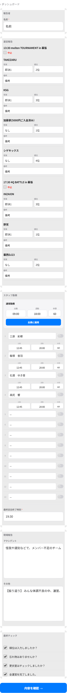
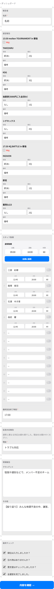
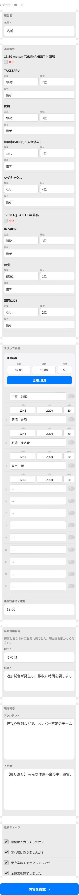

延長退勤検知機能 — UI プレビュー
houkoku-form 報告画面の3つの状態
判定ロジック
スタッフの退勤時刻が以下の基準を超えた場合のみ、延長理由入力欄が出現します。
標準退勤時刻 = 最終試合終了時刻(F12) + 片付け時間(既定35分) + 閾値(既定15分)
= 最終試合終了時刻 + 50分
例: 最終試合終了が 17:00 の場合 → 17:50 以降に退勤したスタッフが1人でもいれば発動。
会場別の片付け時間は勤務・給与管理SSの会場マスタで個別設定可能(空なら既定35分)。
1. 通常状態(延長なし)
全員が標準退勤時刻内 or 最終試合終了時刻が入力前の初期状態。
延長対応報告セクションは非表示で、通常通りの報告フローのみ。

2. 超過検知(延長セクション自動出現)
1人でも「最終試合終了+50分以降」に退勤したスタッフがいると、
自動的に「延長対応報告」セクションが出現し、理由入力を促します。

選択肢(プリセット):
・ トラブル対応
・ お客様対応延長
・ 撤収混雑
・ その他
3.「その他」選択時(詳細入力欄が追加表示)
「その他」を選んだ時のみ、自由記述用の詳細欄が下に追加表示されます。
他の選択肢(トラブル対応・お客様対応延長・撤収混雑)では詳細欄は出ません。

送信時の整形:
payload.overtimeReason = "その他: 追加試合が発生し、撤収に時間を要しました"
この文字列が会場シートの N417 に書き込まれ、30分タイマーの大会完了速報にも「理由: その他: 追加試合が発生し…」の形で含まれます。
トーン設計
「遅い」「超過」といった指摘表現は避け、「運営時間が延長になった理由をお聞かせください」という事実ベースの落ち着いたトーン。スタッフを責めない・疑わない設計思想。